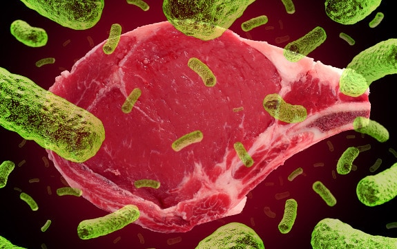
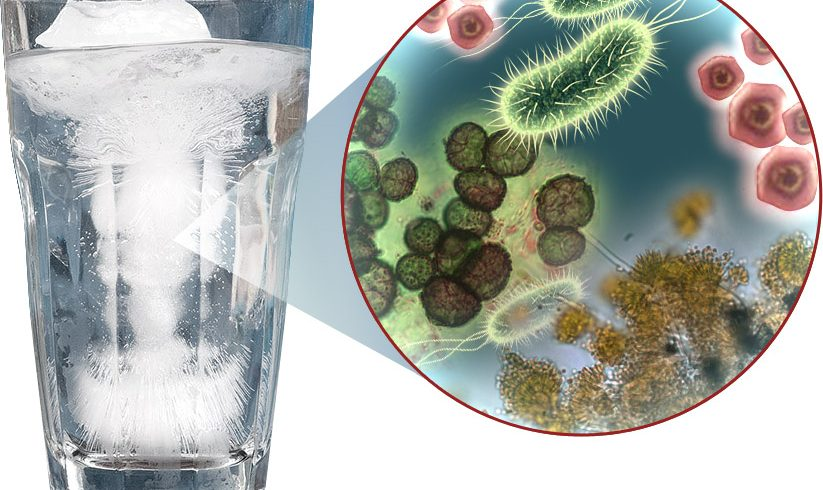

How is VTEC spread?
The organism can be found on a small number of cattle farms. It can live in the intestines of healthy cattle and sheep and can be shed in their faeces.
Meat can become contaminated during slaughter, and organisms can be thoroughly mixed into beef when it is minced. Eating meat (especially minced beef) that has not been cooked sufficiently to kill E. coli O157:H7 can cause infection. Although the number of organisms required to cause disease is not known, it is suspected to be very low.
The organism is found in the faeces of infected persons and it can be passed from one person to another if hygiene or hand-washing habits are inadequate. This is particularly likely among toddlers who are not toilet trained. Family members and playmates of these children are at high risk of becoming infected. Remember, infected persons can shed the organism in their faeces for a few weeks after they recover.
Those who have contact with livestock, either through the course of their work or while visiting farms, should be aware that the organism can be transferred from faeces present on the animal hide to their hands and clothing. Grazing land can also be contaminated with animal waste and recreational users of land (e.g. campers and hill-walkers) can become infected through contact with contaminated grass and soil. A number of outbreaks in the UK have been associated with visiting petting farms.
Sometimes, water sources can become contaminated with animal waste (manure). Drinking or swimming in untreated contaminated water can result in infection.
Bacteria present on the cow's udder or on equipment may get into raw milk. Infection can occur following the consumption of unpasteurised milk. Salad vegetables that are consumed raw have been known to cause infection.
How is VTEC infection diagnosed?
Your doctor will ask you to submit one or more faeces samples to see if you are infected.
How is the illness treated?
Most persons recover without antibiotics or other specific treatment in 5-10 days. There is no evidence that antibiotics improve the course of disease, and it is thought that treatment with some antibiotics may precipitate kidney complications. Anti-diarrhoeal agents, such as loperamide (Imodium), should also be avoided.
Haemolytic uraemic syndrome is a life-threatening condition usually treated in an intensive care unit. Blood transfusions and kidney dialysis are often required. With intensive care, the death rate for those who have HUS is 3%-5%.